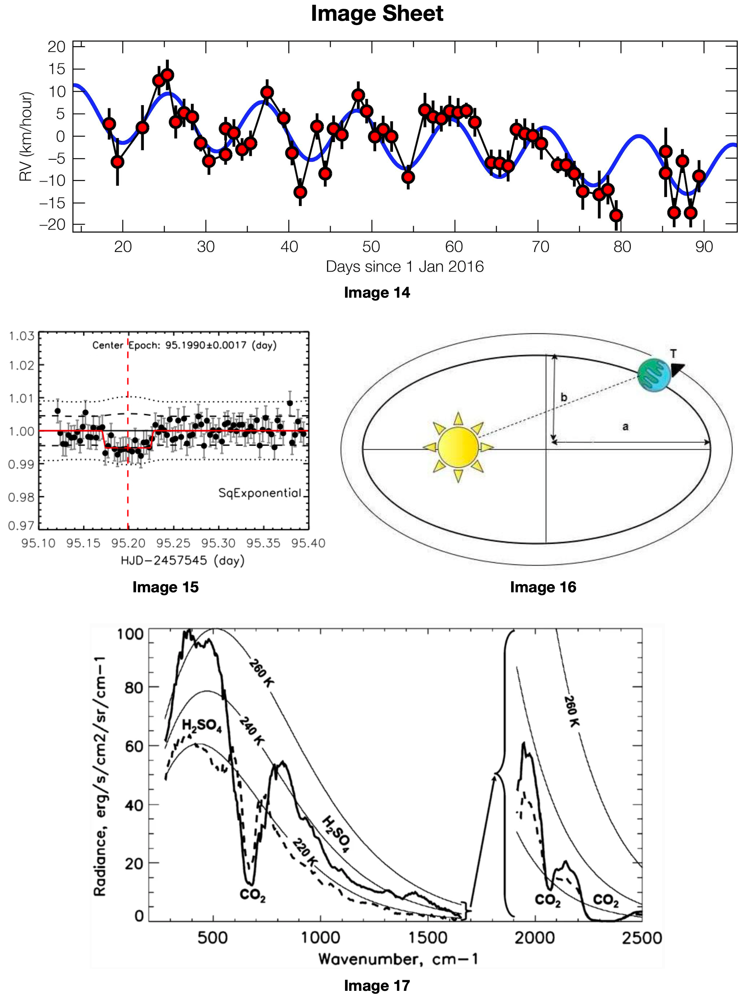

📸 IMAGE SET Reference these images when answering the questions below
Images 1-13: Various Solar System Objects

Images 14-17: Detection Methods & Analysis
Image Viewer
Click on an image reference button to view images here.
1. Image 8 depicts the surface of a rocky Solar System planet. (4 points total)
(a) What is the name of the planet whose surface is shown here? [1 pt]
(b) What type of missions produced this image? [1 pt]
(c) What type of geologic feature is most prominently shown in this image? [1 pt]
(d) What is the primary compositional component of this feature? [1 pt]
📸 Referenced Images:
Answers:
(a) Mars
(b) Satellite OR probe OR orbiter
(c) Ice cap OR ice sheet
(d) Water ice
Mars has prominent polar ice caps composed primarily of water ice, visible in orbital imagery.
2. Image 6 depicts a surface feature on the largest moon of the planet Saturn. (5 points total)
(a) What is the name of this moon? [1 pt]
(b) What type of feature is most prominently shown in this image? [1 pt]
(c) What is the primary compositional component of this feature? [1 pt]
(d) What is shown in the image inset on the left-hand side of Image 6, and why would this be important to depict? [2 pts]
📸 Referenced Images:
Answers:
(a) Titan
(b) Lake
(c) Hydrocarbons (OR methane/ethane)
(d) It shows the changing shape of a small land feature on the lake's coast, indicating that it is geologically dynamic
Titan has hydrocarbon lakes and seas, with dynamic shorelines that change over time due to seasonal effects.
3. The first Earth-sized exoplanet in its star's habitable zone was discovered in 2014. (6 points total)
(a) What is the name of this exoplanet? [1 pt]
(b) Which image depicts the orbital configuration of this planetary system? [1 pt]
(c) What criteria must a planet satisfy to be in the "habitable zone"? [2 pts]
(d) Could a planet outside of the "habitable zone" theoretically support life? Why or why not? [2 pts]
📸 Referenced Images:
Answers:
(a) Kepler-186f
(b) Image 4
(c) It must hold liquid water on its surface given sufficient atmospheric pressure
(d) Yes it could, because of the potential for life to arise through biochemical means below a planet's surface
The habitable zone is defined by the ability to maintain liquid water, but subsurface life could exist beyond this zone.
4. Image 9 depicts the surface of a Solar System planet. (6 points total)
(a) What is the name of the planet whose surface is shown here? [1 pt]
(b) What wavelength was this image taken in? [1 pt]
(c) Why was it necessary to image the surface of this planet in this wavelength? [2 pts]
(d) What is the primary geologic feature shown in this image, and what does it indicate about this planet's geologic past? [2 pts]
📸 Referenced Images:
Answers:
(a) Venus
(b) Radar
(c) Venus has a dense atmosphere, and only radar is capable of penetrating through the clouds to image the surface
(d) Surface lava flows; indicate that Venus was and still is geologically active
Venus's thick atmosphere requires radar imaging to see the surface, revealing extensive volcanic activity.
5. Image 5 is an illustration of one of the missions launched and operated with the purpose of exploring Jupiter and its moons. (5 points total)
(a) What is the name of the spacecraft depicted in this image? [1 pt]
(b) What is the current operational status of this mission? [1 pt]
(c) What was this mission's principal science goal, and why is Jupiter an ideal candidate to study for this purpose? [3 pts]
📸 Referenced Images:
Answers:
(a) Juno
(b) Operational, still conducting science
(c) Goal was understand the composition and evolution of the early Solar System; Jupiter is ideal because it is the largest and most typified gas giant in the Solar System
Juno studies Jupiter's interior structure to understand how gas giants and the Solar System formed.
6. TOI-700 is a red dwarf that hosts an exoplanetary system. (5 points total)
(a) What does "TOI" stand for? What does this indicate about its discovery? [2 pts]
(b) Which image depicts a computer model of this star's stellar wind activity? [1 pt]
(c) Why is an understanding of TOI-700's stellar wind activity necessary in assessing the potential habitability of its planetary system? [2 pts]
📸 Referenced Images:
Answers:
(a) TESS Object of Interest; indicates it was discovered by the Transiting Exoplanet Survey Satellite, or TESS
(b) Image 13
(c) Habitability as we know it requires a planet to maintain an atmosphere, and strong stellar wind can disrupt or event prevent planetary atmospheric formation
Stellar winds can strip away planetary atmospheres, making habitability assessment crucial for exoplanets.
7. Enceladus is one of the largest moons of Saturn and a primary candidate for potential extraterrestrial life in the Solar System. (6 points total)
(a) Which image depicts active geological processes occurring on Enceladus? [1 pt]
(b) What type of geologic feature is depicted in this image, and how were such features identified? [2 pts]
(c) Describe the process occurring in this image, and what it can tell us about the possibility of life existing on Enceladus. [3 pts]
📸 Referenced Images:
Answers:
(a) Image 7
(b) Subsurface geysers; detected via Cassini spacecraft fly-throughs of ejected material
(c) The geysers eject subsurface ocean material into space, which includes amino acids (the building-blocks of life) attached to ice crystals in the ejected material
Enceladus's geysers provide direct access to its subsurface ocean, revealing organic compounds that suggest potential for life.
8. The OSIRIS-REx mission was launched in 2016 to study one of the asteroids of the Solar System. (4 points total)
(a) What is the name of the asteroid this mission was sent to study? [1 pt]
(b) Which image depicts this mission and its target? [1 pt]
(c) What is the primary scientific purpose of this mission, and through what means will it be accomplished? [2 pts]
📸 Referenced Images:
Answers:
(a) 101955 Bennu
(b) Image 2
(c) To understand early Solar System conditions and explore potential sources of life; accomplished via sample return
OSIRIS-REx collected samples from asteroid Bennu to study the early Solar System and origins of life.
9. Mars is the most directly-studied planet in the Solar System aside from Earth, with over three dozen missions so far sent to explore it. (5 points total)
(a) Which image depicts the Martian surface from one ground-based mission? [1 pt]
(b) Which mission was responsible for capturing this image, and in what major feature on the surface of Mars is it located? [2 pts]
(c) Describe the local geological makeup of this feature, and why it is a relevant area of study for Mars-exploring missions. [2 pts]
📸 Referenced Images:
Answers:
(a) Image 12
(b) Curiosity rover; Gale Crater
(c) It is composed primarily of clay- and sulfate-rich rocks, common in areas of present or evaporated water respectively
Gale Crater contains evidence of past water activity, making it ideal for studying Mars's potential for past life.
10. The closest star to Earth also hosts the closest planetary system to Earth. (5 points total)
(a) What is the name of this star? [1 pt]
(b) Which image depicts the orbital configuration of this planetary system? [1 pt]
(c) One of the planets in this system orbits within its star's habitable zone. Relative to other habitable-zone planets, is life on this planet more or less likely to exist? Why or why not? [3 pts]
📸 Referenced Images:
Answers:
(a) Proxima Centauri
(b) Image 1
(c) Less likely, because it orbits very close to its parent star which emits intense, atmosphere-stripping E-M radiation
Proxima Centauri b orbits very close to its red dwarf star, exposing it to harmful radiation and stellar flares.
11. Europa is one of the largest moons of Jupiter and a primary candidate for potential extraterrestrial life in the Solar System. (7 points total)
(a) Which image depicts the surface of Europa? [1 pt]
(b) What type of feature is most prominent in this image? [1 pt]
(c) How are such features thought to form on Europa? [1 pt]
(d) What does the presence of these features suggest about the structure of Europa? Why? [2 pts]
(e) What role does Europa's orbit around Jupiter play in this process, and what implication does this have for the habitability of Europa? [2 pts]
📸 Referenced Images:
Answers:
(a) Image 11
(b) Ridges in the ice surface
(c) Sheets of ice "raft" in blocks, with the boundaries as visible ridges
(d) It suggests that it has a subsurface ocean, which would facilitate the movement of ice sheets
(e) Europa is pulled by Jupiter's gravity, flexing its surface and heating its ocean, driving ice sheet movement and potentially creating a warm interior environment for life
Europa's ice shell floats on a subsurface ocean, with tidal heating from Jupiter maintaining liquid water beneath.
12. Image 3 depicts the surface of a rocky Solar System object. (4 points total)
(a) What is the name of the object depicted in this image? [1 pt]
(b) How was the prominent dune-like feature in this image formed? [1 pt]
(c) What major chemical discovery was made on this object, and what does this potentially imply about the origin of life in the Solar System? [2 pts]
📸 Referenced Images:
Answers:
(a) 67P/Churyumov-Gerasimenko
(b) Deposition of dust released from the comet
(c) Carboxylic acids found on the surface; implies that comets may have delivered the building blocks of life to early Solar System
The Rosetta mission discovered organic compounds on comet 67P, supporting theories about comets delivering life's building blocks to Earth.
Section B: Advanced Analysis Questions
4 Questions - Variable Points - Total: 40 Points
13. Very few exoplanets are both close enough to Earth and bright enough compared to their parent star to be directly imaged. Most of the time, exoplanet discovery occurs via indirect means of detection. Images 14 and 15 compare two of these means. (10 points total)
(a) What methods of detection are depicted in Images 14 and 15 respectively? [2 pts]
(b) Which image corresponds to the most practical detection method of a planet orbiting closely around a low-mass star? Why? [2 pts]
(c) Which image could have been produced by the TESS mission? Why? [2 pts]
(d) What is the approximate orbital period of the planet depicted in Image 14? [2 pts]
(e) If the planet depicted in Image 15 were to orbit at a significantly slower orbital period with all else about its orbit unchanged, how would the plot appear different, if at all? [2 pts]
📸 Referenced Images:
Answers:
(a) Radial velocity and transit methods
(b) Image 14; radial velocity measurements are more pronounced when planet:star mass ratio is greater, and close orbits are harder to detect transits
(c) Image 15; TESS makes transit detections and it is a transit plot
(d) 10 days (+/- 2 days)
(e) The decrease in brightness at center epoch 95.1990 days would remain the same depth, but would persist for a longer period of time
Different detection methods have different advantages depending on the star-planet system characteristics.
14. Image 16 is a simplified and exaggerated depiction of the Earth's orbit around the Sun, with variables a, b, and T denoting three different orbital measurements. (10 points total)
(a) What value do each of these variables represent, and what unit measurement (e.g. mass, distance, time, angle, etc.) do they correspond to? [3 pts]
(b) How would you expect T to change (increase/decrease/no change) if both a and b were increased, with all else remaining the same? [2 pts]
(c) How would you expect a, b, and T to change (increase, decrease, no change) if the mass of the Sun were increased, with all else remaining the same? [3 pts]
(d) What measurement (not depicted) represents the "oval-ness" of the orbit? Write an expression for this measurement in terms of only the provided values. [2 pts]
📸 Referenced Images:
Answers:
(a) a = semimajor axis (distance), b = semiminor axis (distance), T = orbital period (time)
(b) Expect T to increase
(c) All three would decrease
(d) Eccentricity (e); e² = 1 - b²/a²
Kepler's laws describe the relationship between orbital parameters and the central mass.
15. One of the most important measurements to determine the habitability of a planet is its equilibrium temperature, or T_eq. (10 points total)
(a) What is a planet's equilibrium temperature, described in words? [2 pts]
(b) Is the Earth in temperature equilibrium? Why or why not? [2 pts]
(c) Why is equilibrium temperature maintenance essential for habitability? What happens if a planet is not able to establish temperature equilibrium? [2 pts]
(d) Imagine an exoplanet observed with the naked eye through an extremely powerful telescope. How would we expect the equilibrium temperature of the planet to change if its parent star were to grow dimmer? What would happen to the radiative energy output of the planet in this case, and how would we need to alter our observations to accommodate this change? [4 pts]
Answers:
(a) T_eq is the average temperature of a planet at which the energy receives from its parent star is equal to the energy it emits
(b) Yes, because the energy it receives from the Sun and the energy it emits are balanced to one another
(c) It is essential to habitability because life as we know it requires a stable T_eq within a certain range to begin and evolve. If a planet does not remain at a roughly constant T_eq, it will eventually grow either too hot or too cold to support life
(d) We would expect the equilibrium temperature of the planet to drop proportionally to the star's dimming. This would have the effect of shifting its radiation out of the visible-light range and into the infrared or radio, leading us to begin observing it with a telescope more sensitive to these wavelengths
Equilibrium temperature is crucial for maintaining stable conditions necessary for life as we know it.
16. Image 17 depicts the atmospheric spectrum of one of the Solar System's inner planets. (10 points total)
(a) What is represented by the labels "CO₂" and "H₂SO₄" in this image, and what does this tell us about the planet being depicted? [2 pts]
(b) What is the name of the planet whose atmosphere is depicted in this image? How can you tell? [2 pts]
(c) Observe the dips in the plot corresponding to the "CO₂" label. What causes these dips to appear, and what does their appearance and size tell us about the composition of the atmosphere of this planet? [4 pts]
(d) Imagine that the planet depicted in this image was completely stripped of its atmosphere. How would this plot change in response? Which inner planet would it most closely resemble? [2 pts]
📸 Referenced Images:
Answers:
(a) Labels represent molecules in the planet's atmosphere, and tell us about their concentration relative to other molecules
(b) Venus, because of the concentration of CO₂ and H₂SO₄ (Mercury/Earth/Mars don't have such high atmospheric concentrations of these molecules)
(c) They are formed by radiated light from Venus being blocked as it impacts the CO₂ molecules in its atmosphere. The dips appear because light at specific wavelengths is blocked by CO₂, and the size of the dip is directly proportional to the concentration of CO₂, telling us that CO₂ is highly abundant in this planet's atmosphere
(d) All of the dips and ridges in the plot would disappear it it would become a uniform curve, most closely resembling the spectrum of Mercury
Atmospheric spectroscopy reveals the composition of planetary atmospheres by analyzing absorption lines at specific wavelengths.
Study Tips
Focus on understanding the underlying physics and planetary science concepts rather than just memorizing facts.
Pay special attention to:
How different detection methods work and their limitations
The relationship between surface features and geological processes
How spacecraft missions have advanced our understanding
The physics behind planet formation and evolution
How different wavelengths of light reveal different information
Habitability criteria and astrobiology concepts
This study guide covers all questions from the 2023 Solar System State Test. Good luck with your preparation!